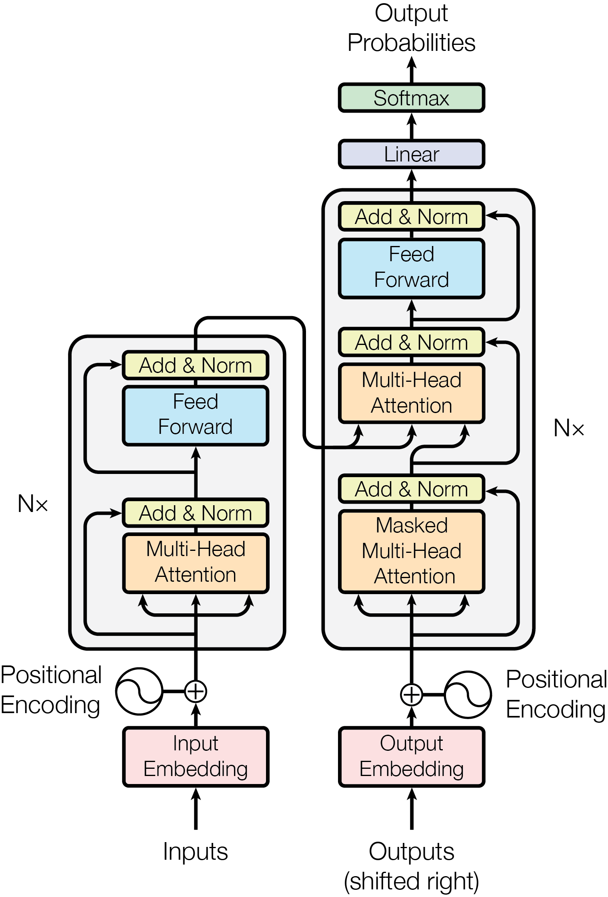

最近读了一些Transformer的文章,记录一下.
由于刚开始读论文,而且不知道自己要从论文中找什么信息,所以完全看不懂,下文的理解非常粗俗.
我会回过头再看好几遍文章的…
Attention Is All You Need 经典永流传

这篇文章提出了一个Transformer架构,基于注意力机制,丢掉了循环,卷积,递归网络.
然后文章说多头注意力机制比缩放点积注意力机制要好一些,因为多头意味着能注意到多个关键点.
Frozen
- 卷积核:一个能突出特定模式的矩阵.
- label smoothing:训练时防止模型太过极端,不把标签设置太绝对的手段.
- tensor:张量,包含向量,可以理解为程序中传递的各种参数矩阵或数组.